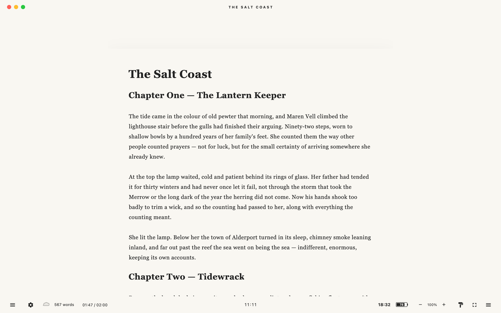
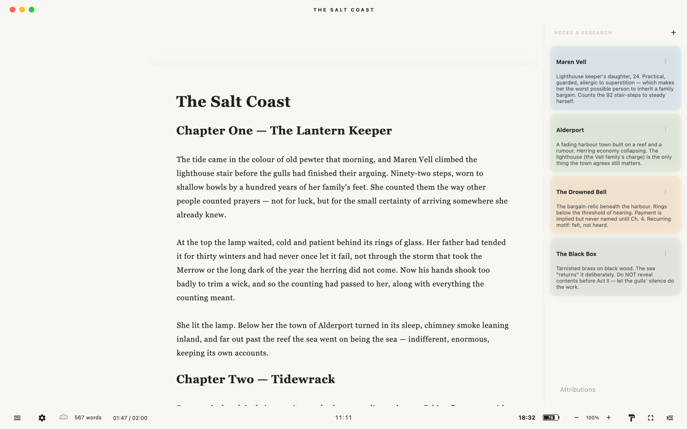
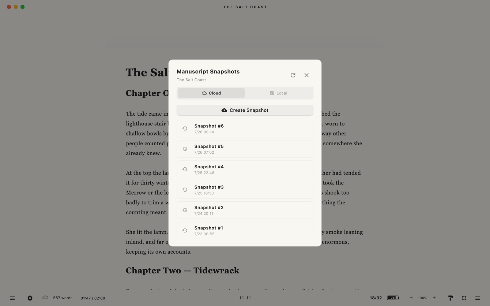
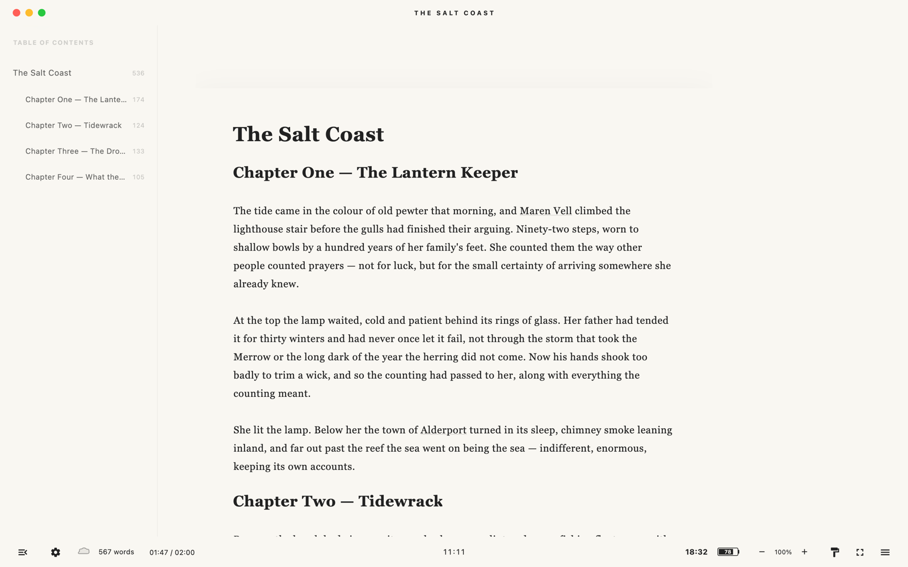
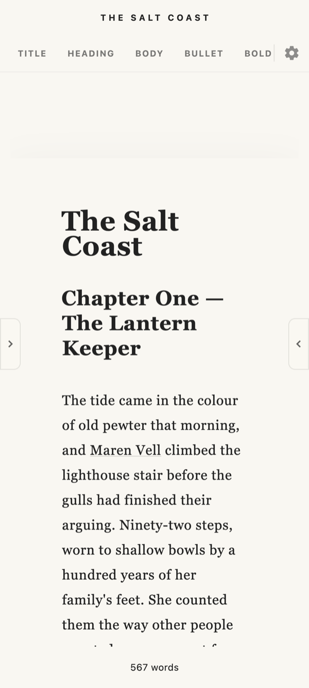
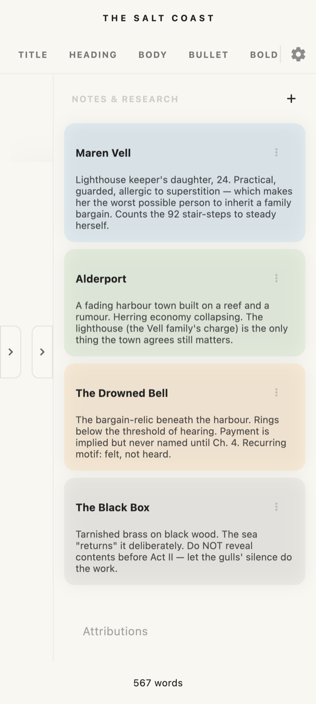

PELLUCID
A local-first Markdown writing app for longform fiction. Pellucid keeps the manuscript at the center, storing work in ordinary project folders you own — never locked inside the app — with optional Google Drive backup. The interface uses Whisper UI: controls stay quiet until they are hovered, focused, or summoned by keyboard shortcut, so the writing surface feels calm without giving up power tools. macOS is the primary platform and its build is essentially release-ready; Windows, Linux, Android, and iOS follow.
CORE PHILOSOPHY
Nothing should stand between the writer and the words, yet the tools should be a keystroke away when needed. Pellucid pairs a quiet, focused editor with structured research that lives beside the manuscript — categorized notes, bidirectional links, and an automated attribution workflow — while keeping every file in plain folders the writer controls.
SYSTEM ARCHITECTURE
Markdown Manuscript (document.md) ↓ autosave + rolling local snapshots (.history/) User-Owned Project Folder ↓ optional backup Google Drive (visible "Pellucid Vault") Research Notes (categories · bidirectional links · attributions)
KEY CAPABILITIES
• Whisper UI: controls stay quiet until hovered, focused, or summoned by shortcut.
• Local-first storage: manuscripts live as Markdown in folders you own, with rolling local snapshots independent of the cloud.
• Optional Google Drive backup through a visible "Pellucid Vault" folder.
• Research notes with categories, bidirectional links, source URLs, and an automated attribution chapter.
• Focus tools: typewriter scrolling, paragraph focus, fullscreen, writing sprints, pomodoro, timers, and alarms.
• Table of contents with per-section word counts, plus search-and-replace with in-editor highlighting.
• PDF and EPUB export, theme presets, and a custom theme designer.
CODEX LINKING
Research notes double as a codex. Whenever a note's title appears in your manuscript, Pellucid quietly turns it into a live link back to that note — no special syntax, no manual tagging. Write a character or a place into a note once, and every mention of it across your prose becomes something you can act on. Hover a name to peek at the note without losing your place, or Cmd+Opt-click (Alt-click on Windows and Linux) to jump straight to it in the research sidebar.
Best of all, it stays out of your way. It links the character named "Mark" without lighting up every "mark" in the prose, always prefers the fullest name when notes overlap ("Salt Coast" over "Salt"), and ignores stray one- or two-letter titles so the page never fills with clutter. The payoff is a story bible that keeps itself wired to the text — so you spend your time writing instead of hunting back through your own notes to remember who someone was.





